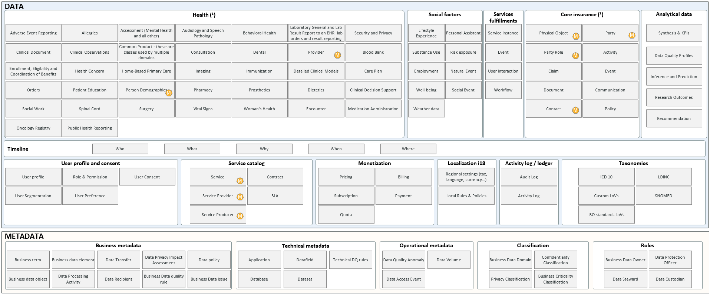

TODO: Ask Access to WIKI page: https://dev.azure.com/dhp-devops/DHP/_wiki/wikis/DHP.wiki/1/DHP-WIKI
| When | What | BS | AD | NS | GH | PG | JG | SS | RA | EM | LS | RG |
|---|---|---|---|---|---|---|---|---|---|---|---|---|
| 2021-03-11 | Project team interview | - | - | - | X | - | - | X | X | X | - | - |
| 2021-03-19 | DHP & Data Architecture | X | X | X | X | - | - | X | X | X | - | - |
| 2021-03-25 | Workshop on Data Retention, Right To be Forgotten, Consent Management | - | - | - | X | X | - | X | X | X | - | - |
| 2021-03-30 | Research stream needs | - | - | - | X | X | X | - | - | - | - | X |
| 2021-04-09 | Integration team interview | - | - | - | X | X | - | - | - | - | X | - |
| 2021-04-12 | CDO Webinar DHP presentation | - | X | X | - | - | - | - | - | - | - | - |
| 2021-04-XX | DMO Webinar DHP presentation | - | - | - | - | - | X | X | X | - | - | - |
| 2021-04-XX | Smart Data Circle DHP presentation | - | - | - | X | X | - | - | X | - | - | - |
| 2021-04-XX | Customer journey & entity business | - | - | - | X | X | - | - | - | - | X | - |
BS: Balazs SZATHMARY; AD: Alexandre DELIDAIS; NS: Nicolas SHIRE; GH: Guillaume HERVOUIN; PG: Pastel GBETOHO; JG: Jérôme GUIGNET; SS: Stéphane SALFRAY; RA: Ruben ALVARADO; LS: Lluis SANCHEZ; RG: Ruben GARZON =======